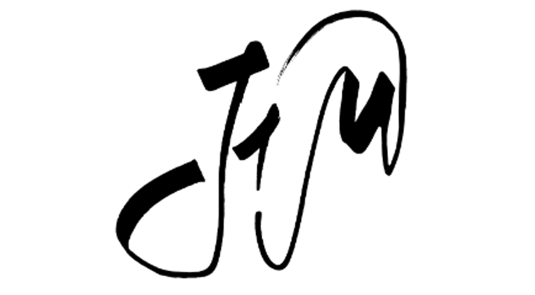

JiM project, Measuring accessibility to services in the 15 Minute City

Exploration
Ville
Fond
OSM
CARTO Positron
CARTO Voyager
OpenTopoMap
Variable à sommer (sélection)
Clear
0
Somme sur 0 polygones sélectionnés
Astuce: clique sur des polygones pour les sélectionner. Change la ville pour recentrer la carte.